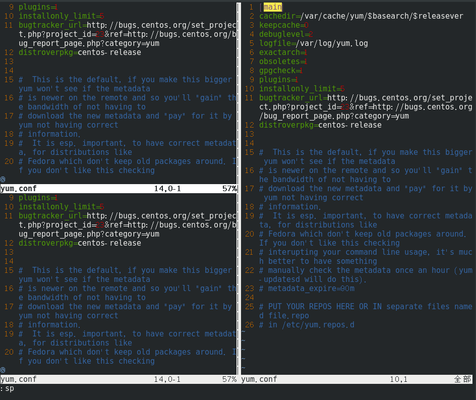
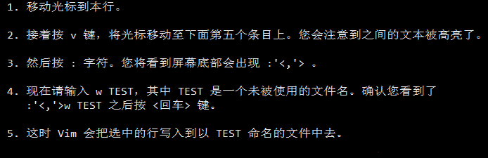
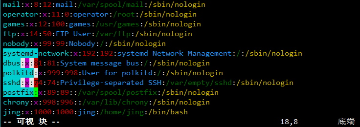

i Insert 模式，按 ESC 回到 Normal 模式
x 删当前光标所在的一个字符
:wq 存盘 + 退出 (:w 【:w F:\我的文档\test.txt】存盘, :q 退出) （陈皓注：:w 后可以跟文件名）
dd 删除当前行，并把删除的行存到剪贴板里
d$ 删除光标处至行末【d0 删除光标处至行首】
J 删除换行符【即合并两行】
p 粘贴剪贴板
hjkl (强例推荐使用其移动光标，但不必需) 你也可以使用光标键 (←↓↑→)
:help <command> 显示相关命令的帮助。你也可以就输入 :help 而不跟命令（退出帮助需要输入:q）
Ctrl+G 显示当前所在位置
:set nu/nonu 显示/省略行号【也可写成“:set number/nonumber”】
:set ruler 显示光标坐标地址
vim + file_name 打开文件并跳至文末
a 在光标后插入【A 在该行最后插入 i 在光标前插入】
o 在当前行后插入一个新行
O 在当前行前插入一个新行
cw 替换从光标所在位置后到一个单词结尾的字符
ce 改变文本直到一个单词的末尾
c$ 替换光标至行末
c0 替换光标至行首
r * 移动光标到出错的位置，接着输入 r 和要替换成的字符，就能将错误替换
R 连续替换多个字符
~ 改变字符的大小写状态
:s/old_word/new_word 改变光标所在行的第一个匹配串
:s/old_word/new_word/g 改变光标所在行的所有匹配串
:#,#s/old/new/g 替换两行之间出现的匹配串【其中 #,# 代表的是替换操作的若干行中首尾两行的行号】
:%s/old/new/g 则是替换整个文件中的每个匹配串
:%s/old/new/gc 会找到整个文件中的每个匹配串，并且对每个匹配串 提示是否进行替换
:%s/word/&/gn 统计[标记]特定字符
:r FILENAME 向当前文件中插入另外的文件的内容
:r !dir 可以读取 dir 命令的输出并将其放置到当前文件的光标位置后面
0 到行头【“home”】
^ 到本行第一个不是blank字符的位置（所谓blank字符就是空格，tab，换行，回车等）
$ 到本行行尾【“end”】
b/w 向前/向后移动一个单词
f + 字符 光标跳至该字符处【F+字符 反向操作】
t + 字符 光标跳至该字符所在单词处【F + 字符】
G 到末行【3G 到第3行】
gg 到首行【相当于“1G”】
如果光标当前位置是括号(、)、[、]、{、}，按 % 会将光标移动到配对的括号上
50% 定位到文档的中间
505 + G 输入您曾停留的行号，然后输入大写 G，即可返回到特定的行
Ctrl+U/D 向上/下半屏滚屏
Ctrl+E/Y 向上/下滚动一行
Ctrl+F/B 向后/前滚动一整屏
zz 使当前行置于屏幕正中央【"zt"把当前行置于屏幕顶端 "zb"把当前行置于屏幕底端】
/pattern【？pattern】 向后/前搜索pattern的字符串（如果搜索出多个匹配，可按n/N上下查看搜索项）【:set ignorecase/noignorecase[ic] 设置忽略/确定使用大小写精确匹配】【:set hlsearch/nohlsearch[hls] 设置/取消高亮显示】
`` 命令可以在两个光标之间来回跳转。
CTRL-O 命令是跳转到你更早些时间停置光标的位置(提示：O 意为 older). CTRL-I【<Tab>】则是跳回到后来停置光标的更新的位置(提示：I 在键盘上位于 O 前面)
字符.*[]^%/?~$ 有特殊意义，如果你要找的东西包括这些内容，要在这些字符前面放置一个反斜杠
F M L 分别跳至当前屏幕的前、中、后位置【Home、Middle、Last】
# * 当光标停留在一个单词处，按下#、* 即可以当前单词为查询目标开始向前、向后查询
/<the> “<”、“>” 是一个特殊的记法：其只匹配一个单词的开始处和结束处
P 往前粘贴
p 往后粘贴【p是表示在当前位置之后，P表示在当前位置之前】
y 复制【可配合可视v使用】
yy 拷贝当前行
yw 拷贝一个单词
3yy 复制当前行起的三行
u 撤销上一步操作 【U 撤销对一行的全部操作】
<Ctrl+R> 返回撤销【——R大写】
:e <path/to/file> 打开一个文件
:w 存盘
:saveas <path/to/file> 另存为 <path/to/file>
:x， ZZ 或 :wq 保存并退出 (:x 表示仅在需要时保存，ZZ不需要输入冒号并回车)
:q! 退出不保存 :qa! 强行退出所有的正在编辑的文件，就算别的文件有更改
:bn 和 :bp 你可以同时打开很多文件，使用这两个命令来切换下一个或上一个文件（:n到下一个文件）
:set fenc=utf-8 【以特定格式保存文档】【:set encoding 查看文档编码格式】
CTRL + G 显示状态信息【目录、行号……】
:sp + 文件名 【split】水平分割
:vsp + 文件名 垂直分割
:close 关闭窗口
Ctrl + W 切换操作窗口 
:new 新开一个可编辑的空的新窗口
:qall 关闭所有打开的窗口
vimdiff vim.txt vim2.txt [与vim -f 相同] 查看两个文档的不同 :set noscrollbind 设置不同步滚动
:! + 外部命令[ls，pwd] VIM中执行一些外部命令
要保存文件的部分内容，请输入 v motion :w FILENAME
【提示：按 v 键使 Vim 进入可视模式进行选取。您可以四处移动光标使选取区域变大或变小。接着您可以使用一个操作符对选中文本进行操作。例如，按 d 键会删除选中的文本内容。】 
Ctrl+v 即可进入可视块选择
确保Vim不是在以兼容模式运行 :set nocp ，输入:e，再按CTRL+D，Vim会显示以e开始的命令的列表，<TAB>键会自动补全命令
:set [no]showmode 显示【隐藏】工作模式
q: 进入命令历史编辑
:set [no]wrap 设置【不】自动换行
:set list 显示制表符【制表符会以^I显示，同时每行行尾都会有一个$符号】
CTRL + S / Q vim锁定和解锁屏幕